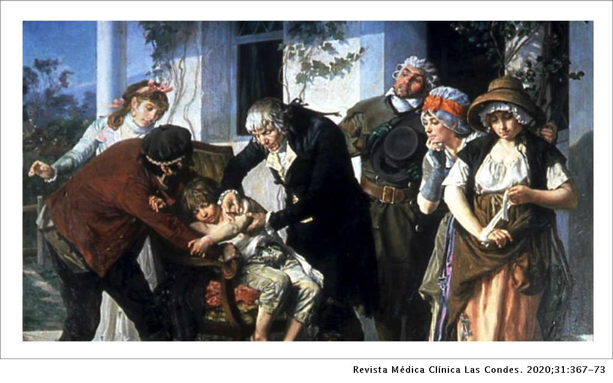

Vacas y Vacunas
Un poco de historiaLas tres V: Viruela - Vaca - Vacuna
La viruela es una enfermedad viral contagiosa que puede producir desfiguración
y ser mortal, y ha afectado a los seres humanos por miles de años.
Los restos momificados del Faraón Egipcio Ramsés V, quien murió en 1157 a.C.
muestran marcas de viruela en su piel.
Síntomas
Los primeros síntomas de la viruela suelen aparecen entre 10 y 14 días después de contraer la infección. Durante el período de incubación de 7 a 17 días, no se presentan síntomas ni se puede contagiar a otras personas.Después del período de incubación, se da la aparición repentina de los signos y síntomas parecidos a la gripe. Algunos de ellos son los siguientes:
- Fiebre
- Malestar general
- Dolor de cabeza
- Fatiga intensa
- Dolor de espalda intenso
- Vómitos (en algunos casos)
Pocos días después, aparecen manchas rojas y planas en cara, manos y
antebrazos, posteriormente en el tronco. En el lapso de uno o dos días,
muchas de estas lesiones se convierten en pequeñas ampollas que contienen
un líquido transparente que luego se convierten en pus. Las costras comienzan
a formarse entre ocho y nueve días después, y con el tiempo se caen y dejan
cicatrices con marcas profundas.
También se producen lesiones en las membranas mucosas de la nariz y de
la boca, que rápidamente se convierten en llagas que se abren.
No existe cura ni tatamiento para ella, solo resta prevenir.
Afortunadamente, a finales de los 70's se declaró erradicada y, el último
caso registrado de esta enfermedad ocurrió en Somalia en 1977.
¿Y las vacas?
Hacia finales del siglo XVIII, un médico inglés, llamado Edward Jenner, observó que las mujeres que ordeñaban a las vacas, algunas veces se contagiaban con una enfermedad parecida a la viruela, la viruela bovina. Ellas presentaban pústulas en las manos, las que mejoraban a los pocos días. Lo extraordinario fue que observó que estas personas se volvían inmunes contra la viruela humana.
La Vacuna
 El 14 de mayo de 1796 extrajo pus de una pústula de la mano de Sarah Nelmes, una ordeñadora que había contraído la viruela de su vaca lechera, y lo inoculó a un saludable niño de 8 años llamado James Phipps (hijo del jardinero de la familia Jenner).
Jenner escribió:
"Para observar mejor cómo evolucionaba la infección, inoculé la
viruela vacuna a un niño sano de ocho años. La vacuna procedía de una pústula del
brazo de una ordeñadora, a quien había contagiado la vaca de su señor. El 14 de mayo
de 1796 se la inyecté al niño a través de dos cortes superficiales en el brazo, cada
uno de los cuales tenía la anchura de un pulgar.
El séptimo día se quejó de pesadez en el hombro; el noveno, perdió el apetito,
tuvo algo de frío y un ligero dolor de cabeza; durante todo el día se encontró enfermo y
pasó la noche inquieto, pero al día siguiente volvió a encontrarse bien. La zona de los
cortes evolucionaba hacia la fase de supuración, ofreciendo exactamente el mismo aspecto
que adquiere la materia virulosa…
Para cerciorarme de que el niño, levemente infectado por la viruela vacuna, había
quedado realmente inmunizado contra la viruela humana, el 1 de julio le inyecté materia
virulosa que había extraído con anterioridad de una pústula humana. Se la apliqué
profusamente mediante varios cortes y punturas, pero no dio lugar a ningún ataque de viruela.
En los brazos aparecieron los mismos síntomas que provocan las sustancias virulosas
en los niños que han sufrido variola o viruela vacuna. Al cabo de unos meses, le volví a
inocular materia virulosa, que en esta ocasión no produjo ningún efecto visible en el
cuerpo".
Los antivacunas son tan antiguos como las vacunas mismas
Jenner envió un informe a la Royal Society de Londres, donde fue rechazado.
En 1798 publicó, con sus propios recursos, el libro “Investigación acerca de las causas y efectos de la viruela
vacuna” y comenzó una campaña en pro de su “vacuna”, que fue muy discutida.
Los científicos de la época, e incluso la Asociación Médica de Londres, se opusieron al tratamiento de Jenner y, en
muchas ocasiones realizaron críticas violentas e injuriosas. Incluso se decíaque la vacuna era una acción anticristiana.
A pesar de los movimientos antivacunas de la época (que publicaban imágenes como la de la derecha) la vacunación
acabó imponiéndose, aunque hoy en día sus métodos de experimentación serían inaceptables por contravenir los principios de la ética médica.